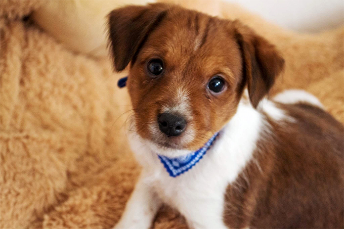
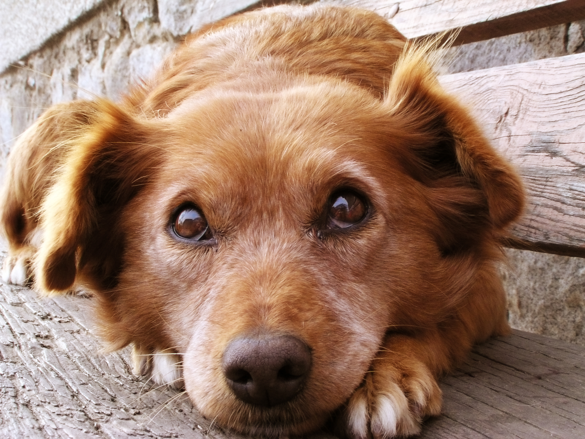
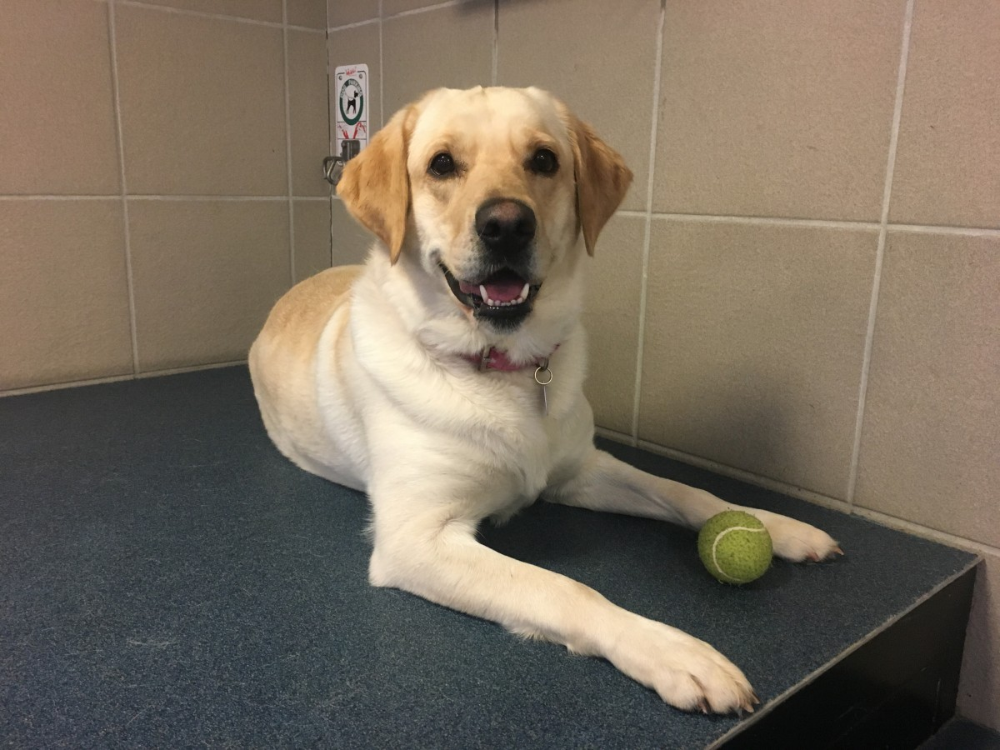
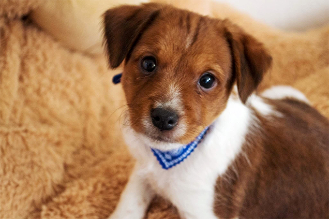
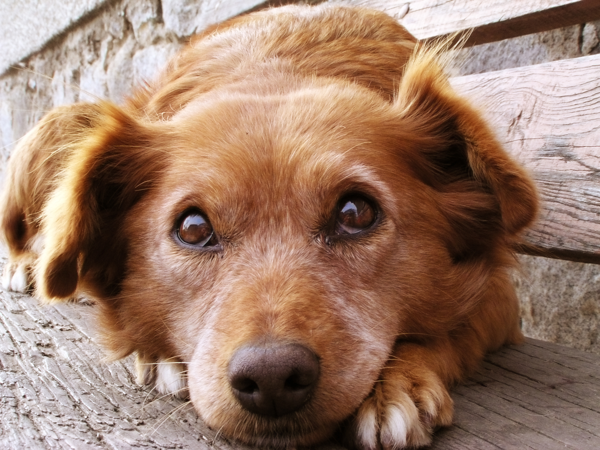
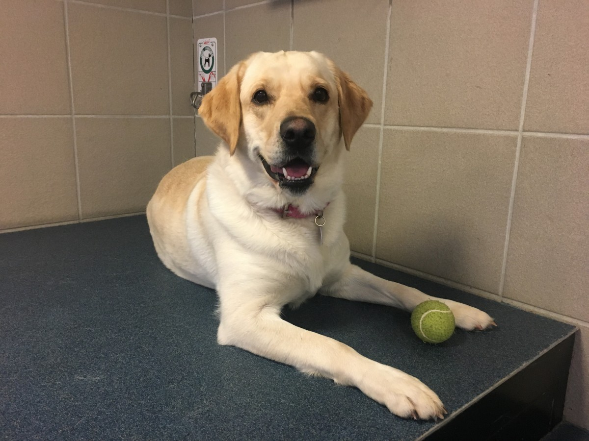
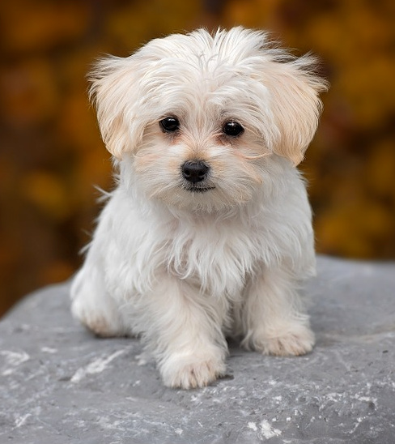
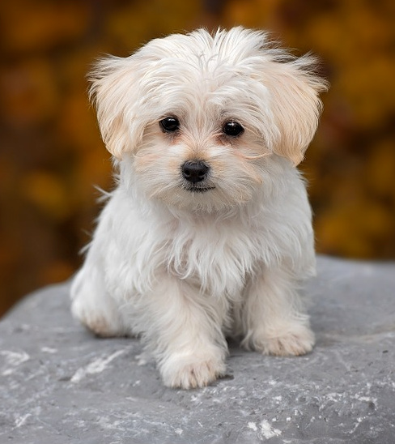
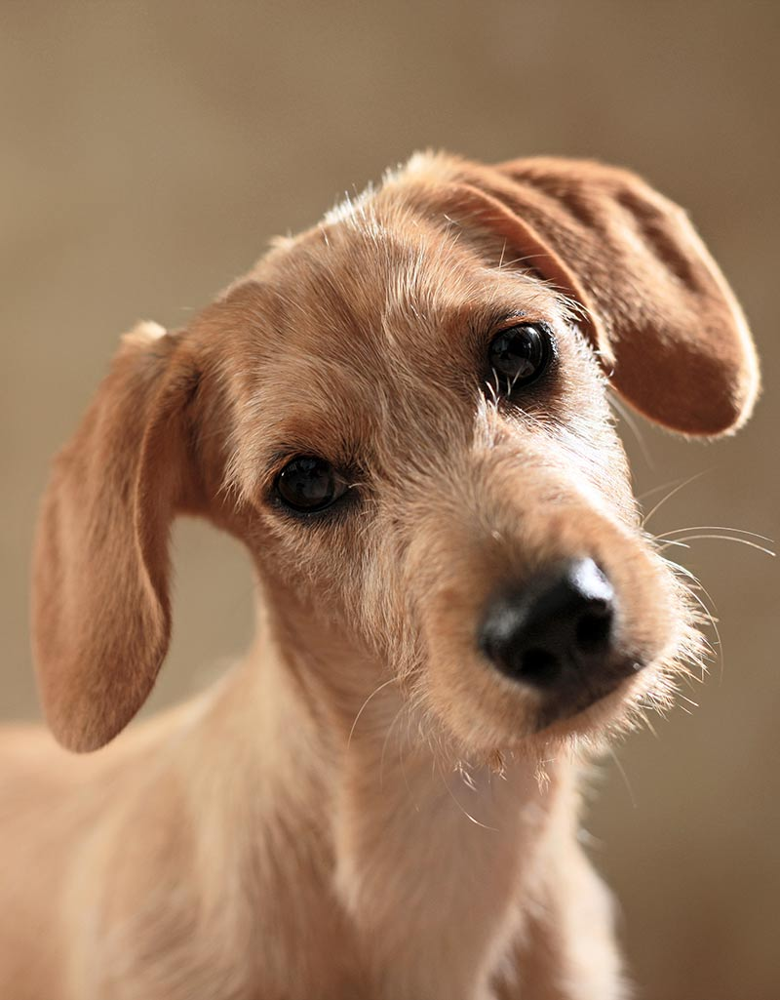
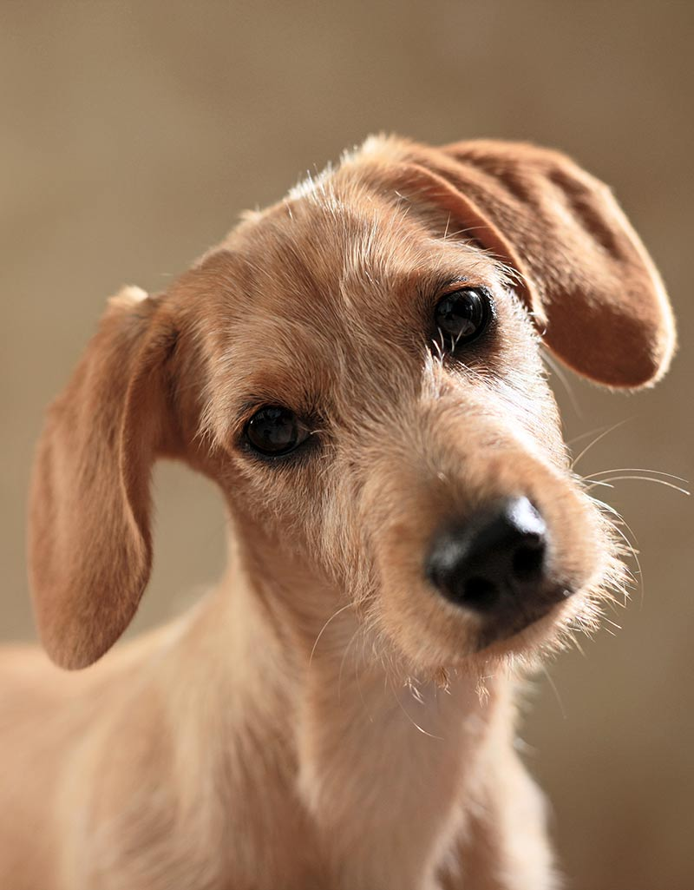

Narrow the search by using keywords:
*Age when lost
For windows: Hold down the control (ctrl) button to select multiple options For Mac: Hold down the command button to select multiple options
Click a photo to see pet profile.


 







 



 
